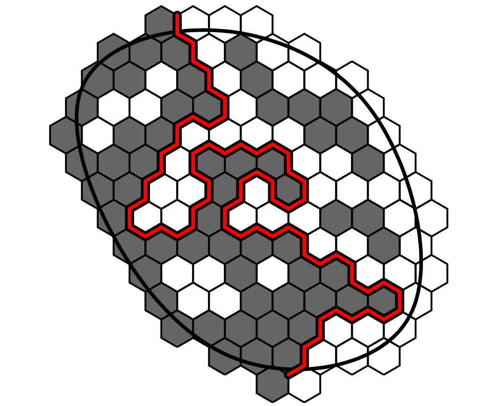
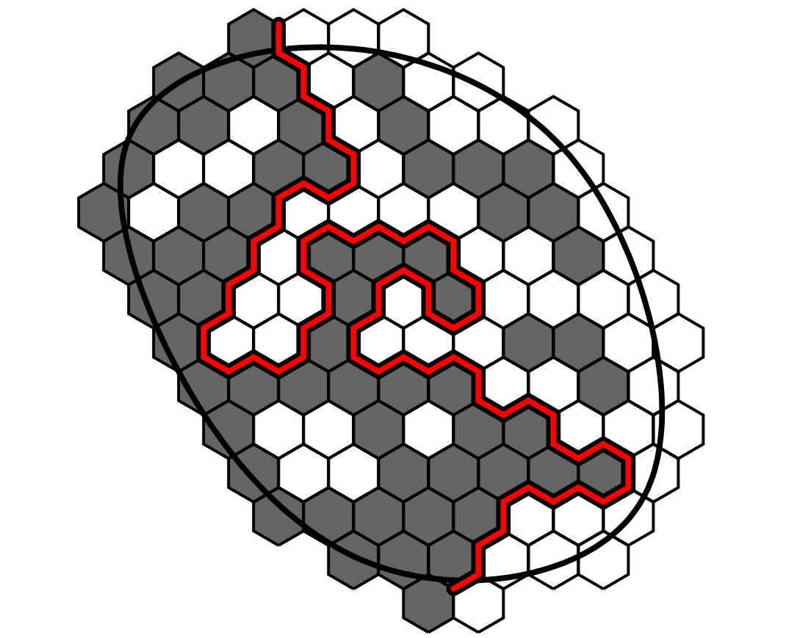
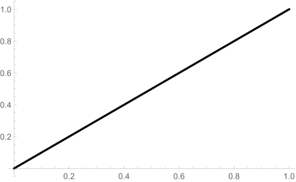
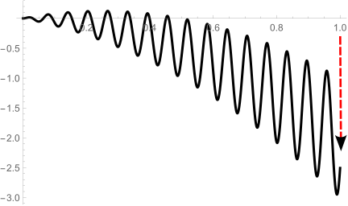
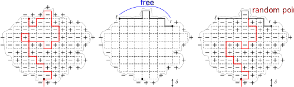

⭐ Content
Motivation
Schramm-Loewner Evolution (SLE)
- Loewner Differential Equation
- Chordal SLE
- Dipolar SLE
Restriction Property
- Self-Avoiding Walk (SAW)
- Brownian Loop
Results
- Sketch of the Proof
Ising model: To study ferromagnetism.
Let V be all boxes of the square and w=(w_v)_{v\in V}\in \lbrace \pm1 \rbrace^V.
We set a probability mass function by \begin{align*} \mathbf{P}\big(\lbrace \omega\rbrace\big) = C \exp\Big( \frac{1}{T} \sum_{u\sim v}w_u w_v \Big), \end{align*} where the summation is over all neighbor pairs in V and C is a normalization constant.
This is a good model for describing ferromagnetism.


 

Schramm-Loewner Evolution (SLE, with a parameter \kappa): To describe the \color{red}{\textbf{limit}} of the two-dimensional lattice models in statistical physics in the critical case.
Next we see the conformal transformations.
Conformal transformations = Local rotation + rescaling.

The conformal transforms keep the structures of two-dimensional lattice models and the planar BM.


K_t is an \mathbb{H}-hull (may not a curve). That is, K_t is a bounded subset of \mathbb{H} and K_t is relatively closed in \mathbb{H}, and \mathbb{H}\backslash K_t is simply connected.
The function g_t restricted to \mathbb{H}\backslash K_t is the unique conformal transformation from (\mathbb{H}\backslash K_t,\infty) to (\mathbb{H},\infty) with expansion \begin{align*} \begin{aligned} g_t(z) = z + \frac{2t}{z} + \cdots, \quad z\rightarrow \infty. \end{aligned} \end{align*}

U_t=t.
 
U_t=t^{1/2}.


U_t=t\sin(t/100).


U_t=t\sin(t/100)-2t^2.
 


Note that \operatorname{SLE}_{\kappa} curve (\gamma(t))_{t\geq 0}
\kappa = 3,4.


\kappa = 6,8.




A self-avoiding walk (SAW) \color{blue}{w} of length 46 in \mathbb{Z}^2.

Let \operatorname{SAW}^{\mathbf{0}}(n) be the set of all SAWs w with w_0=\mathbf{0}, \lvert w\rvert=n and let \operatorname{SAW}^{\mathbf{0}}=\bigcup_{n\in \mathbb{N}} \operatorname{SAW}^{\mathbf{0}}(n).
Let C_n=\# \operatorname{SAW}^{\mathbf{0}}(n). Then there exists a \beta\in(0,\infty) called the \color{blue}{\text{connective}} \color{blue}{\text{constant}} such that C_n \approx \beta^n.
Let \mu^{\operatorname{SAW}}(\mathbf{0}) be the measure on \operatorname{SAW}^{\mathbf{0}} by \begin{align*} \begin{aligned} \mu^{\operatorname{SAW}}(\mathbf{0})\bigl\lbrace w \bigr\rbrace=\beta^{-\left\lvert w \right\rvert}. \end{aligned} \end{align*}